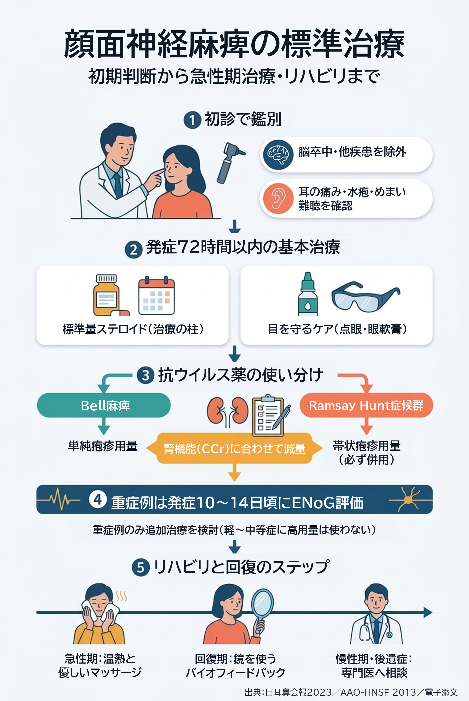
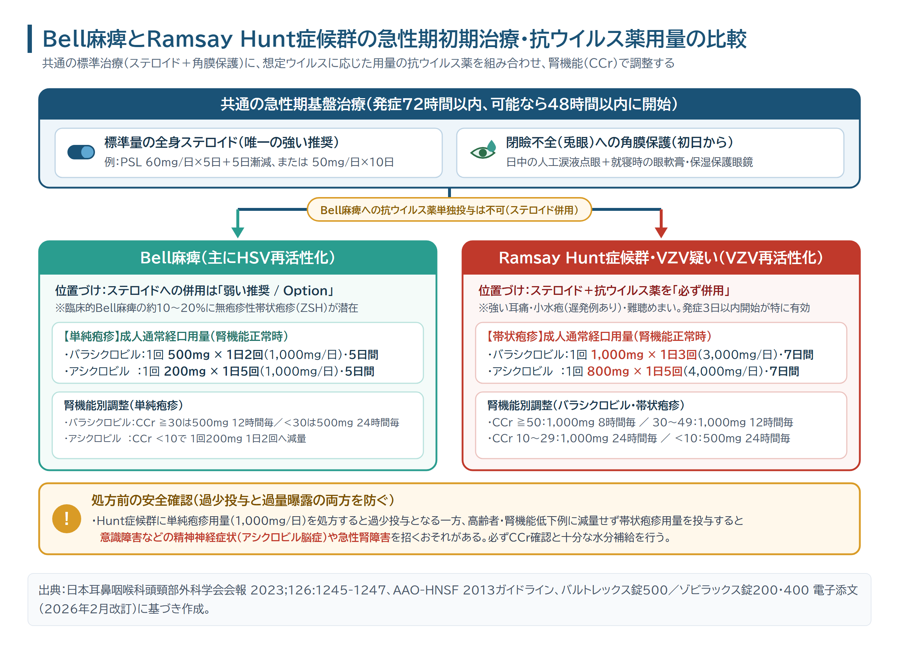
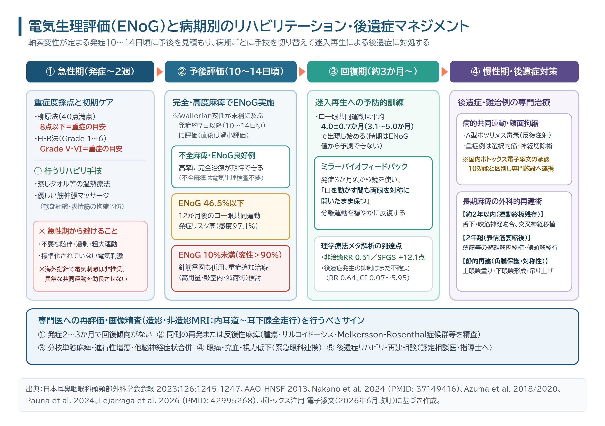

顔面神経麻痺の標準治療と最新動向｜インフォグラフィック・図解（原寸拡大）
画像をタップすると原寸のPNG画像が開きます。抗ウイルス薬の投与量は病型（単純疱疹用量／帯状疱疹用量）およびクレアチニンクリアランス（CCr）に応じて個別に調整し、閉瞼不全や非典型所見がある場合は速やかに専門医へ連携してください。
全体要約：顔面神経麻痺の標準治療と最新動向

図1：Bell麻痺（単純疱疹用量）とRamsay Hunt症候群（帯状疱疹用量）の初期治療比較

図2：電気生理評価（ENoG）と病期別のリハビリテーション・後遺症マネジメント
